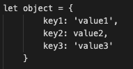
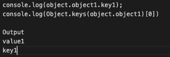
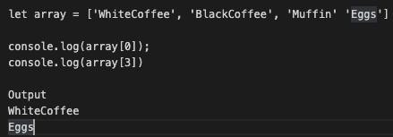

Fundamentals of JavaScript and DOM
Tech Blog Post 27 January 2023
The Relationship Between HTML, CSS and JavaScript
Javascript, HTML and CSS form the core programming languages of front-end and web development and the easiest way to think about their relationship is to compare it to a birthday card - yeah that simple!
Have you ever seen a birthday card where it looks pretty and when opened makes a sound? That is pretty much how web development works. Let’s imagine you are in charge of making the birthday card for your parents 60th birthday, it's a great milestone so you want to make something special. In order for us to do that we have to think about which type of card to use(backbone), what content we want to put in the card, what colors and designs we are going to use and finally whether or not to add some special effects when it opens up!
You can think of HTML as the backbone and the content of the birthday card. HTML forms the structure, cardboard, where you can begin to insert text such as “Happy 60th birthday, Mom!” HTML can also define where in the card the content will go. But what is a card without any color or pretty designs?
CSS can apply color, decide the spacing of texts, fonts and design out how the card will look. So you create a beautiful birthday that is not so boring without colors and ugly fonts.
Do you want to make the birthday card a little more interactive and exciting? such as making the card play a sound every time the card is opened. This is where JavaScript comes in. JavaScript can listen in to the actions we performed such as opening the card up and triggering events how it was programmed to make the birthday card more exciting. For example, we might attach a sensor in the card which detects the card opening and once the sensor is triggered, a little music player embedded in the card will play a tune.
Javascript, HTML and CSS all play an important role in making a website and interacting with each oth er to make the website more interactive and unique.
What is control flow?
The term control flow refers to the order in which the instructions in your program are executed. In Javascript, this will generally run from the first line of code to the last line in the code so that things work as they’re meant to. You can think of the routine of getting ready for work as a simple analogy. You may have a simple routine to get up,make your bed, brush your teeth, have breakfast, pack your bags, and leave the house , so you would do these tasks every day in the same order unless there are some variables to consider in this routine. This is where loops come in.
Loops are, in simple terms; a disruption in the code which runs through the internal code until a certain condition is met. An example in our routine will be to have breakfast until we are full. This may be some small amount of food or much more but it will continue looping until you are satisfied that you are full enough to start the day.
What is the DOM, and how can I interact with it?
The Document Object Model (DOM) represents the logical structure of documents so that programs can change the document structure, style, and content. The DOM represents the document as nodes and objects; that way, programming languages, such as javascript, can interact with the page.
This concept is more easily explained with an analogy. Think of a television, you may want to change the channel and also the volume. The remote serves as the bridge which allows you to interact with your television. You can make the TV active and dynamic via the remote. And in the same way, JavaScript makes the HTML page active and dynamic via the DOM.
You are able to call the document(in this case HTML) in the code and interact with and manipulate with all the nodes in the document using DOM function such as document.getelementID(‘the node that has specific ID in’) - from here JavaScript can interact with all the nodes so that you can add text to the node, change color when node is hovered and the potential is limitless.
Back to the analogy of a TV, the remote needs to be implemented with a programme where when + volume is pressed it will decrease the volume output in the TV. The remote(DOM) can search out the volume out (node) in the TV (document) and apply the decrease volume function in the remote (javascript)
Difference between accessing data from arrays and objects
Both Arrays are Objects are special data types in JavaScripts and can be difficult to distinguish at first. They both represent data that is mutable (meaning that the value of the data can change when used) and can be used to store a collection of data (rather than just a single value). So what is the best way to distinguish them?
Objects are used to represent a “thing” in your code. That could be a person, a car, a building, a book, a character in a game — basically anything that is made up or can be defined by a set of characteristics. In objects, these characteristics are called properties that consist of a key and a value. One example of object looks like this:
In objects you are able to access different parts of the object and manipulate from there. For example:
Arrays are used whenever we want to store a list of multiple items in a single variable. Arrays are especially useful when creating ordered collections where items can be accessed by their numerical position in the list. One example of array looks like this:
What are functions and why are they helpful?
Functions are sets of statements that performs a task or calculates a value and acts as a fundamental building block in JavaScripts. Functions are very useful as they can be reused throughout the code for a predefined action. You are able to code it so that it will listen for an event in the document and trigger the function each time the event occurs. In the Television example, the function to increase the volume will ‘listen’ for the + volume button to be clicked before actually increasing the volume.